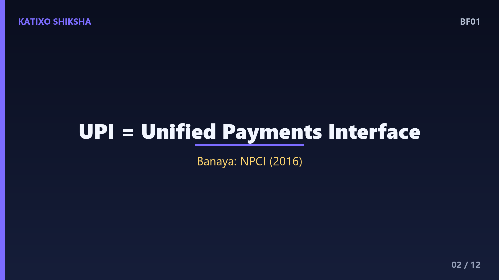
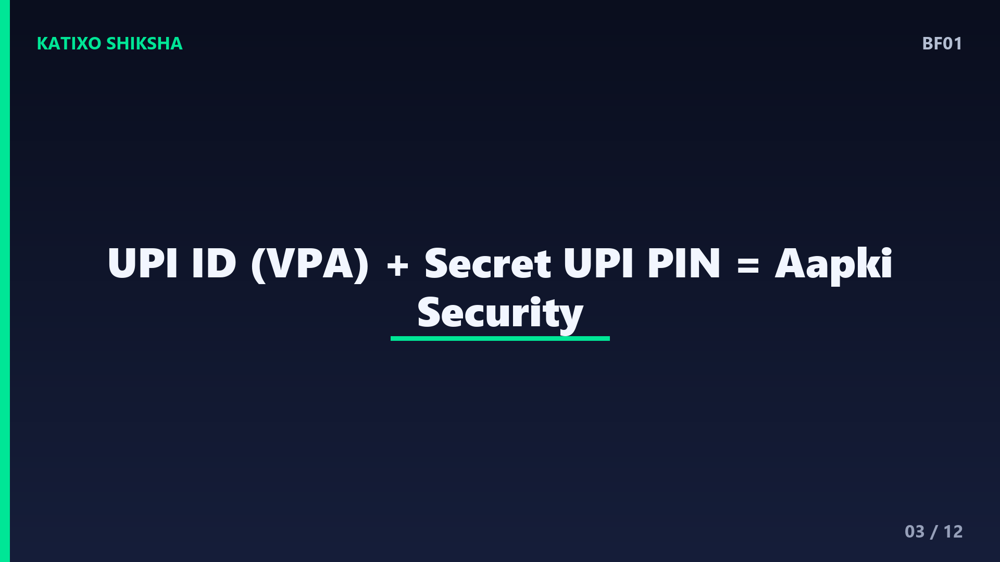
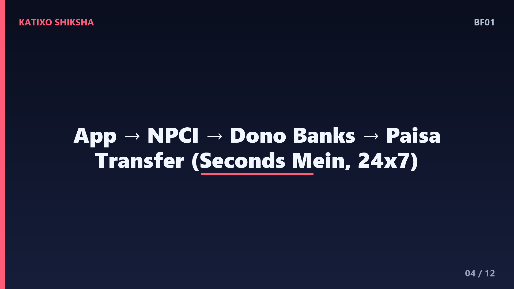
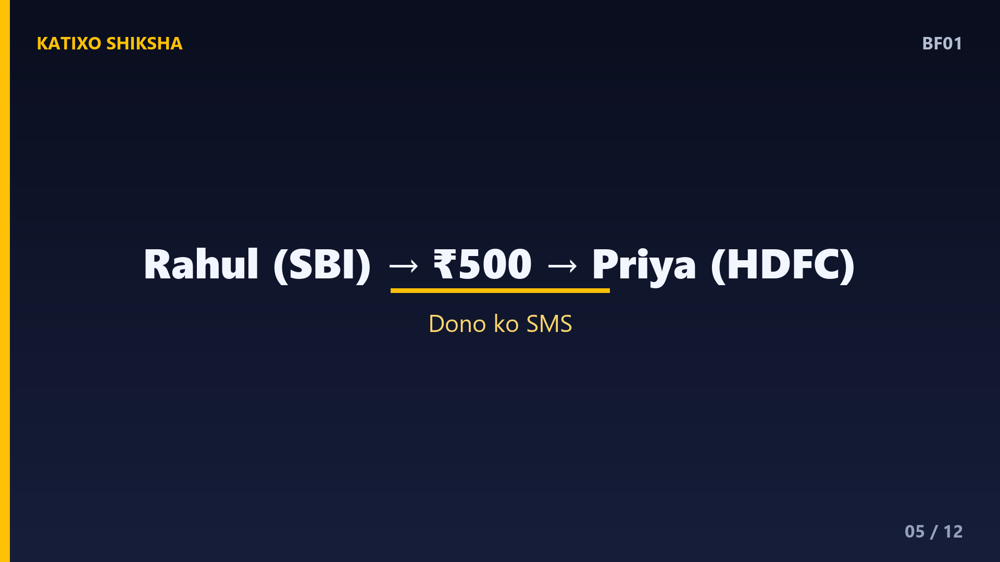
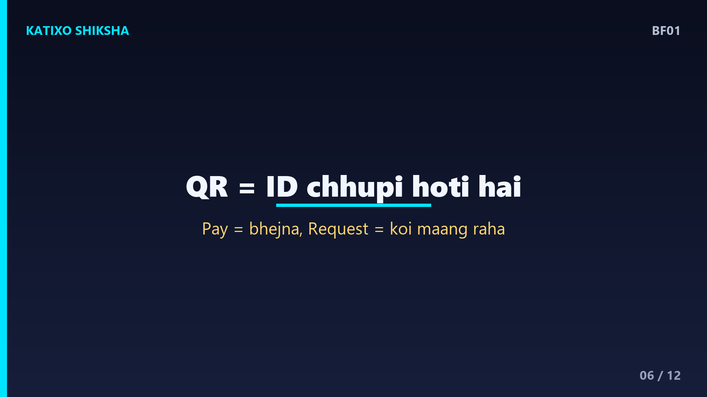
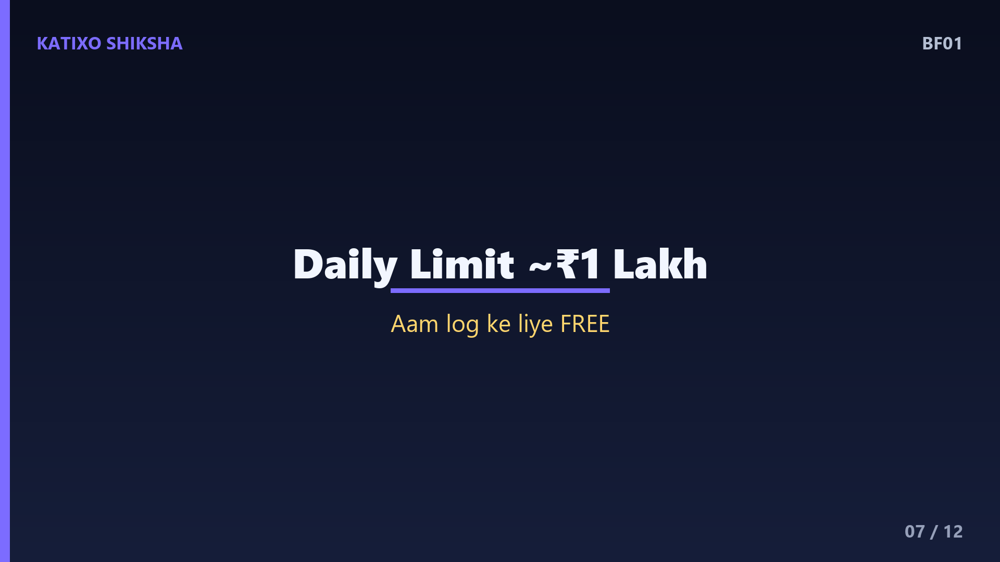
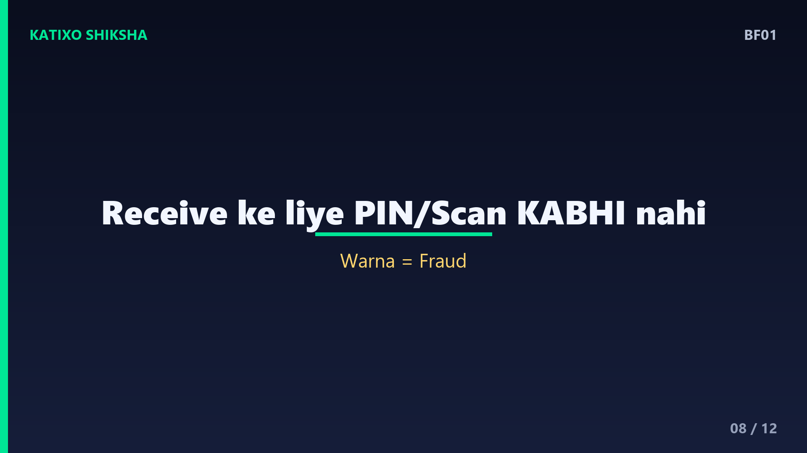
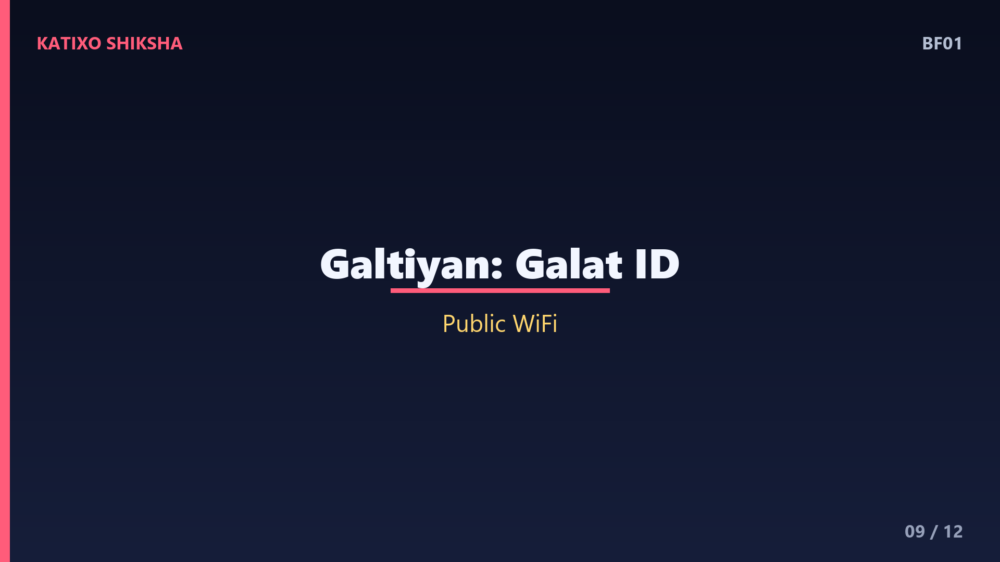
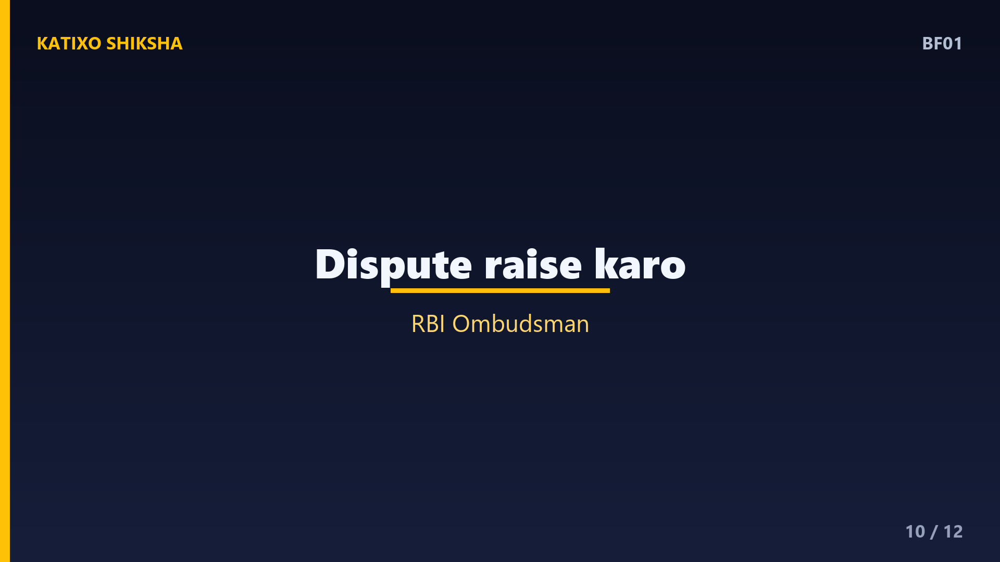
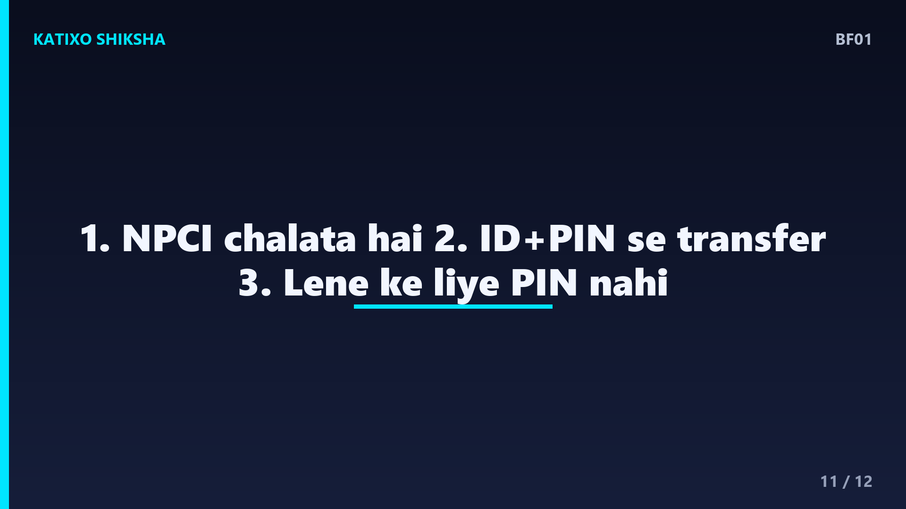

BF01 — UPI Kaise Kaam Karta Hai: Ek Second Mein Paisa Kaise Pahunchta Hai?
Slide 1दोस्तों, सोचो — आप चाय वाले को QR code scan करके दो सेकंड में पैसे भेज देते हो, और बिना cash, बिना card, paisa तुरंत पहुँच जाता है। आज हम सब रोज़ UPI इस्तेमाल करते हैं, पर ये असल में काम कैसे करता है? Katixo KhojLab की इस finance explainer में हम simple तरीके से समझेंगे — UPI यानी Unified Payments Interface के पीछे की पूरी कहानी। RBI और NPCI से लेकर आपके phone की एक tap तक, सब कुछ। चलो शुरू करते हैं।

Slide 2सबसे पहले — UPI है क्या? UPI का मतलब है Unified Payments Interface. इसे साल 2016 में बनाया NPCI ने, यानी National Payments Corporation of India, जो RBI और देश के बड़े bankों ने मिलकर खड़ा किया एक non-profit organisation है। UPI एक ऐसा system है जो आपके अलग-अलग bank account को एक ही mobile app से जोड़ देता है। इससे पहले पैसा भेजने के लिए account number, IFSC code, सब डालना पड़ता था। UPI ने ये सब हटाकर इसे बहुत आसान बना दिया।

Slide 3अब समझो UPI ID और PIN का खेल. जब आप कोई UPI app जैसे GPay, PhonePe या BHIM चलाते हो, तो आपको मिलती है एक VPA, यानी Virtual Payment Address — जैसे yourname@oksbi. ये आपके bank account का एक छोटा सा नाम है, ताकि किसी को आपका असली account number बताना ना पड़े। और एक होता है UPI PIN — चार या छह अंकों का secret number, जो सिर्फ़ आप जानते हो। बिना सही UPI PIN के एक भी रुपया account से नहीं निकल सकता। यही आपकी सबसे बड़ी security है।

Slide 4अब असली सवाल — पैसा एक second में पहुँचता कैसे है? जब आप किसी को पैसा भेजते हो, तो आपकी UPI app request भेजती है NPCI के central system को। NPCI एक बीच का traffic police जैसा है। वो देखता है — पैसा किस bank से जा रहा है और किस bank में पहुँचना है। फिर वो दोनों bankों से बात करता है, आपका UPI PIN verify करवाता है, और हरी झंडी मिलते ही पैसा transfer कर देता है। ये पूरा सफ़र सिर्फ़ कुछ ही seconds में पूरा हो जाता है, चौबीस घंटे, सातों दिन।

Slide 5चलो एक concrete example लेते हैं. मान लो आप राहुल हो, आपका account SBI में है, और आपको प्रिया को 500 रुपये भेजने हैं, जिसका account HDFC में है। आप app खोलते हो, प्रिया का UPI ID priya@okhdfc डालते हो, 500 amount डालते हो, और अपना UPI PIN डालते हो। पीछे क्या होता है? NPCI आपके SBI account से 500 कटवाता है और प्रिया के HDFC account में 500 जुड़वा देता है। आपको और प्रिया दोनों को तुरंत SMS आ जाता है। बस, transaction complete।

Slide 6अब एक मज़ेदार बात — QR code का role. जब आप किसी दुकानदार का QR scan करते हो, तो उस code के अंदर बस उसकी UPI ID और कभी-कभी amount छुपा होता है। Scan करते ही app उस ID को अपने आप भर देती है, ताकि आपको typing ना करनी पड़े और गलती ना हो। दो तरह के payment होते हैं — Pay, जहाँ आप पैसा भेजते हो, और Collect या Request, जहाँ कोई आपसे पैसा माँगता है। हमेशा ध्यान दो — request approve करने का मतलब है पैसा आपके account से जाएगा, आना नहीं।

Slide 7एक और ज़रूरी चीज़ — limits और charges. RBI और NPCI के नियम के मुताबिक़, normal UPI से एक दिन में आम तौर पर एक लाख रुपये तक भेज सकते हो, हालाँकि हर bank की अपनी limit थोड़ी अलग हो सकती है। सबसे बड़ी खुशखबरी — आम लोगों के लिए person to person और छोटे merchant payment पर कोई charge नहीं लगता, UPI बिल्कुल free है। इसी free और fast होने की वजह से आज भारत दुनिया में digital payment में सबसे आगे है। हर महीने अरबों transactions होते हैं।

Slide 8अब बात safety की, क्योंकि यहीं लोग सबसे ज़्यादा फँसते हैं. नियम नंबर एक — पैसा receive करने के लिए कभी UPI PIN डालने की ज़रूरत नहीं होती। अगर कोई कहे — पैसा लेने के लिए PIN डालो या ये QR scan करो — तो समझ जाओ ये fraud है, क्योंकि PIN और scan सिर्फ़ पैसा भेजने के लिए होते हैं, लेने के लिए नहीं। नियम नंबर दो — किसी अनजान की भेजी request को कभी approve मत करो। नियम नंबर तीन — अपना UPI PIN किसी से भी share मत करो, bank वाला भी कभी नहीं माँगता।

Slide 9कुछ common गलतियाँ जो लोग करते हैं. पहली — जल्दबाज़ी में गलत UPI ID पर पैसा भेज देना। हमेशा भेजने से पहले नाम check करो, app receiver का नाम दिखाती है। दूसरी — public WiFi पर payment करना, हमेशा अपना mobile data इस्तेमाल करो। तीसरी — screen पर आए किसी भी lottery या cashback के लालच में अनजान link या QR पर tap करना। याद रखो — असली cashback अपने आप account में आता है, उसके लिए कुछ scan या approve नहीं करना पड़ता। थोड़ी सी सावधानी आपका पैसा बचा लेती है।

Slide 10अगर कभी गलत transaction हो जाए तो क्या करें? घबराओ मत। पहले अपनी UPI app में जाओ, transaction history खोलो, और वहीं Raise Dispute या Report a Problem का option होता है, वहाँ complaint दर्ज करो। अगर वहाँ हल ना मिले, तो RBI का एक system है जिसे कहते हैं Digital Ombudsman, जहाँ आप शिकायत कर सकते हो। और अगर fraud हुआ है, तो तुरंत 1930 नंबर पर call करो — ये भारत सरकार का cyber fraud helpline है। जितनी जल्दी report करोगे, पैसा वापस मिलने के chance उतने ज़्यादा।

Slide 11तो चलो एक quick recap करते हैं, तीन points में. एक — UPI एक ऐसा system है जो NPCI चलाता है और RBI जिसकी निगरानी करता है, और ये आपके bank account को mobile app से जोड़ता है। दो — पैसा भेजने के लिए सिर्फ़ UPI ID और आपका secret UPI PIN चाहिए, और transaction कुछ ही seconds में पूरा हो जाता है। तीन — पैसा लेने के लिए कभी PIN या scan की ज़रूरत नहीं, यही बात याद रखोगे तो ज़्यादातर fraud से बच जाओगे।
Slide 12तो दोस्तों, अगली बार जब आप दो सेकंड में चाय वाले को पैसे भेजो, तो आपको पता होगा कि पीछे NPCI, आपका bank और एक PIN मिलकर कितना बड़ा काम कर रहे हैं। UPI ने पैसे भेजने को इतना आसान बना दिया कि अब cash की ज़रूरत ही कम पड़ती है, बस समझदारी से इस्तेमाल करना ज़रूरी है। Aisi aur simple finance explainers ke liye Katixo KhojLab ko subscribe karein! मिलते हैं अगले episode में। Ye general educational info hai, financial advice nahi.